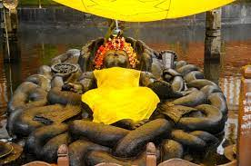
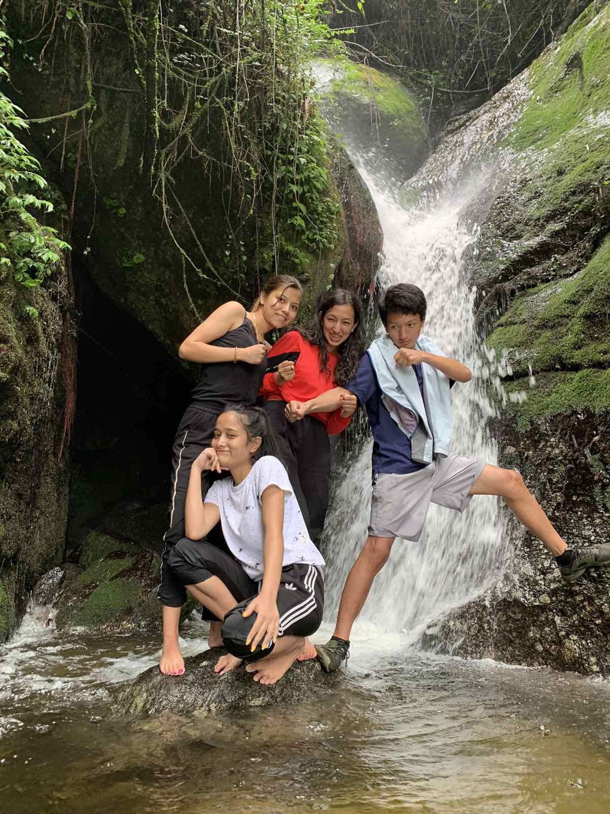
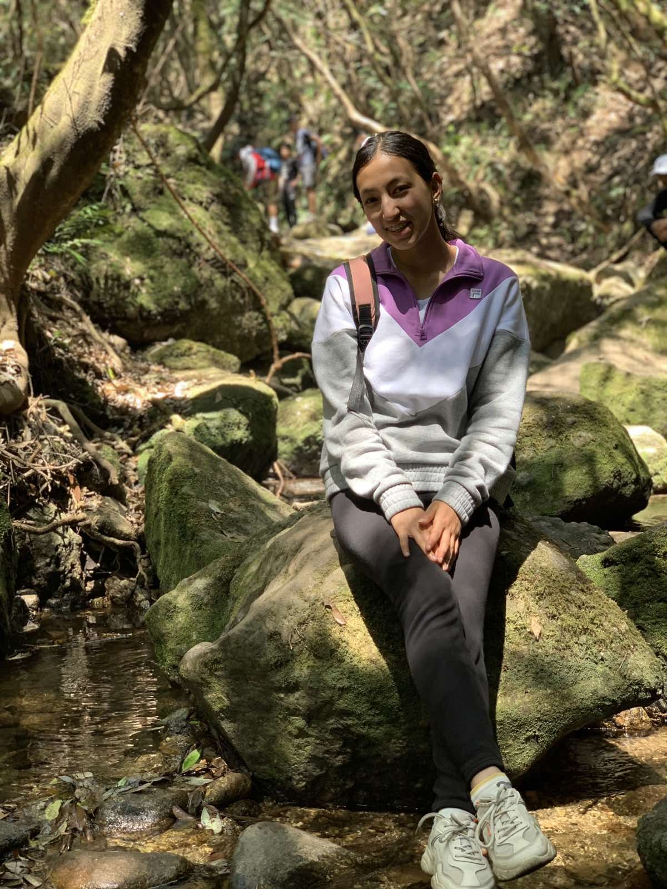

There are a lot of place to visit in Budhanilkantha. Among them:
Budhanilkantha Temple

Located at the foot of the Shivapuri hills in the northern-most part of Kathmandu Valley, Budhanilkantha is about 8 km from the city. The largest stone statue of Lord Vishnu in Nepal, it shows him reclining on a bed of Nagas or serpents in the middle of a small pond. A priest is usually in attendance at the foot of the image to receive offerings from devotees. The 5m long granite image carved out of a single rock dates back to the Lichhavi period. The Lichhavis ruled the valley before being ousted by the Malla dynasty, who in turn were conquered by King Prithvi Narayan Shah.
Shivapuri Nagarjun National Park
Shivapuri Nagarjun National Park is the ninth national park in Nepal and was established in 2002. It is located in the country's mid-hills on the northern fringe of the Kathmandu Valley and named after Shivapuri Peak of 2,732 m (8,963 ft) altitude. It covers an area of 159 km2 (61 sq mi) in the districts of Kathmandu, Nuwakot and Sindhupalchowk, adjoining 23 Village Development Committees. In the west, the protected area extends to the Dhading District.


Iskcon Krishna Mandir
ISKCON Budhanilkantha lies in the beautiful and peaceful area of Kathmandu Valley below the Shiva Puri Hill and the holy River Vishnumati. It is approximately 13 kilometres from the airport and approximately 15 kilometres from downtown. The temple conducts daily aratis and Srimad Bhagwatam class similar to other ISKCON temples. There is a guesthouse, a goshala, a restaurant, and a garden within the temple premises.
If you need any guide for visiting places in budhanilkantha you can contact on:9876543210 or Fill the form